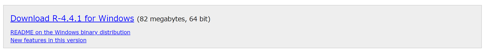
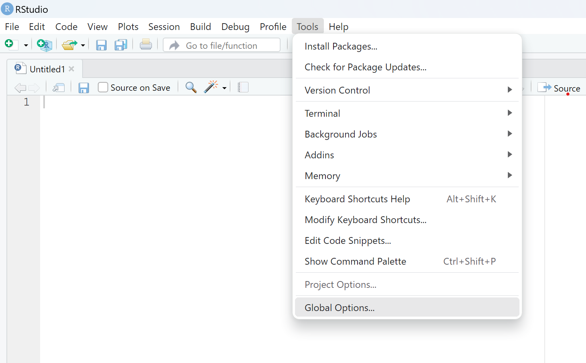
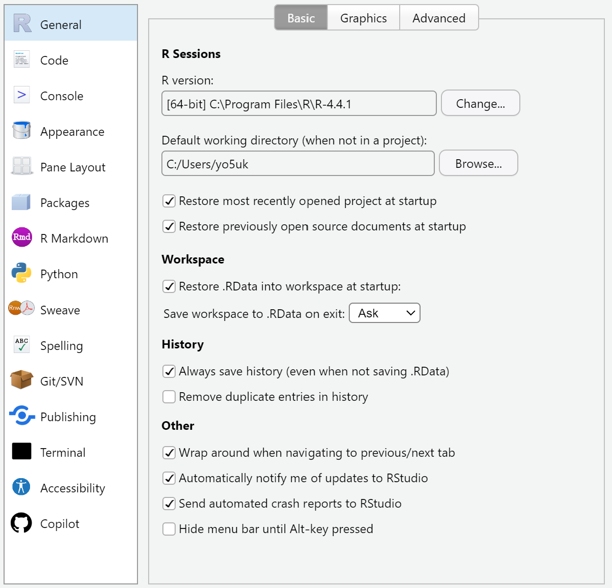
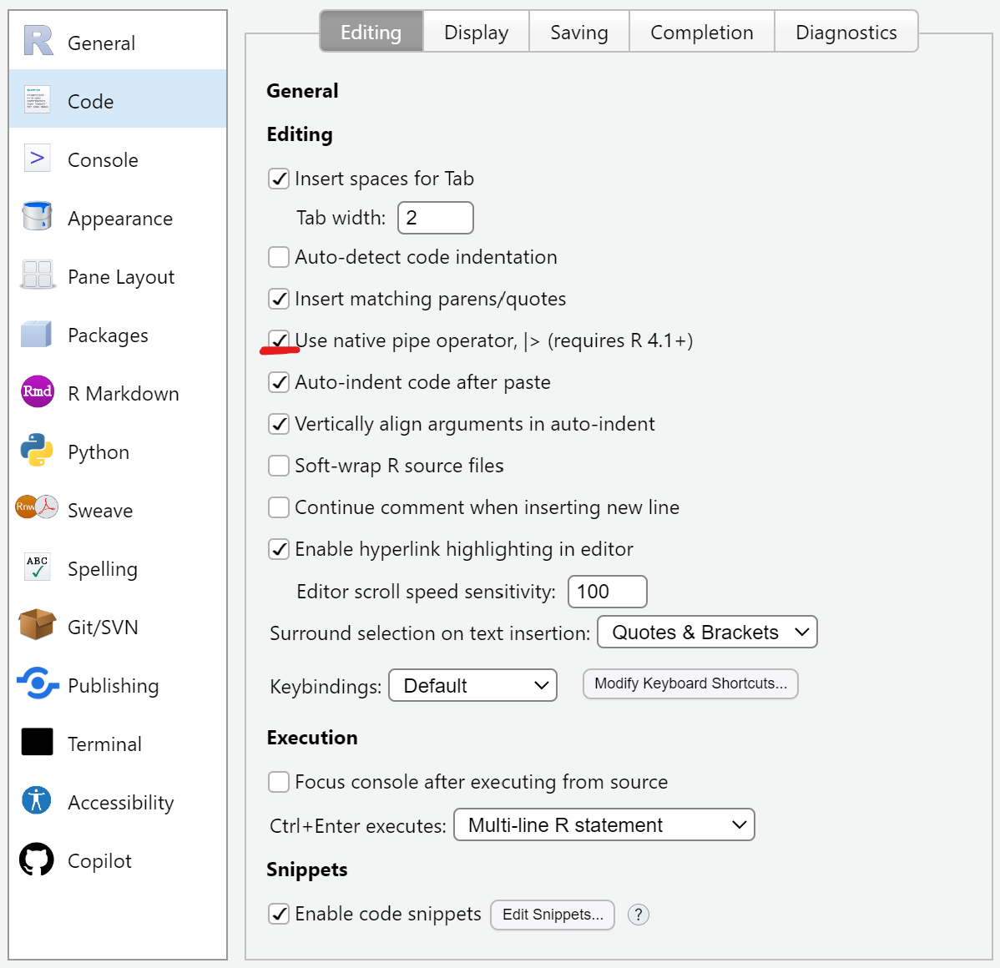
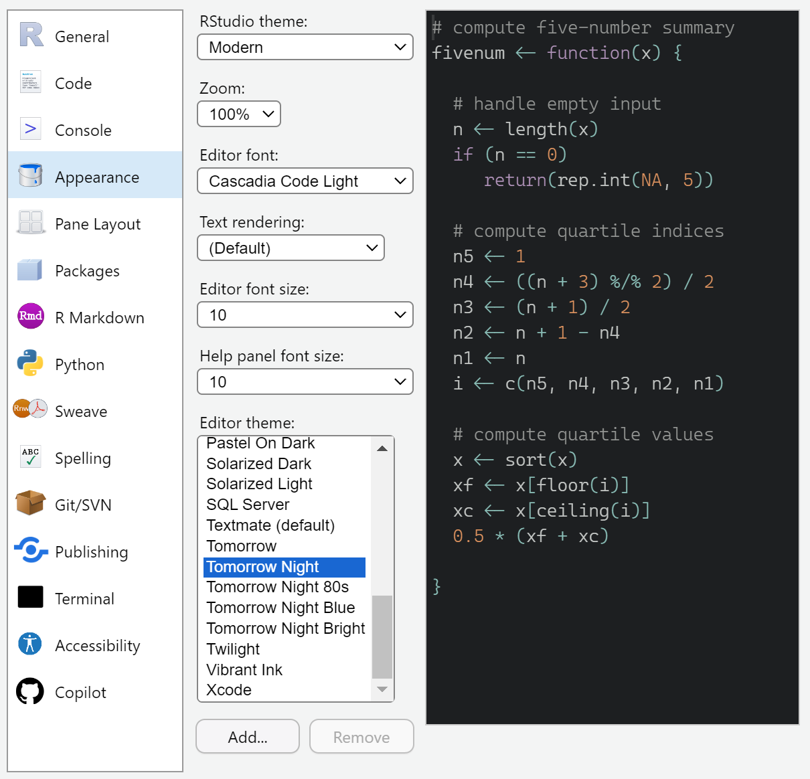
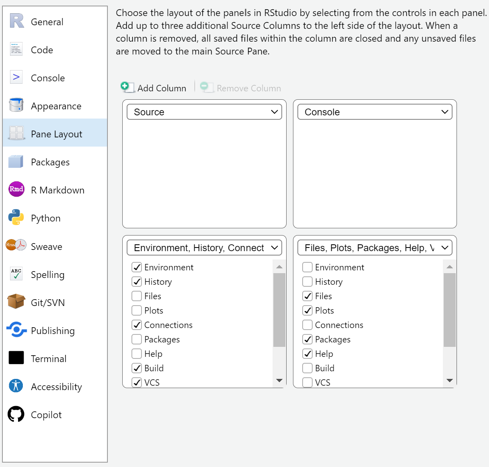
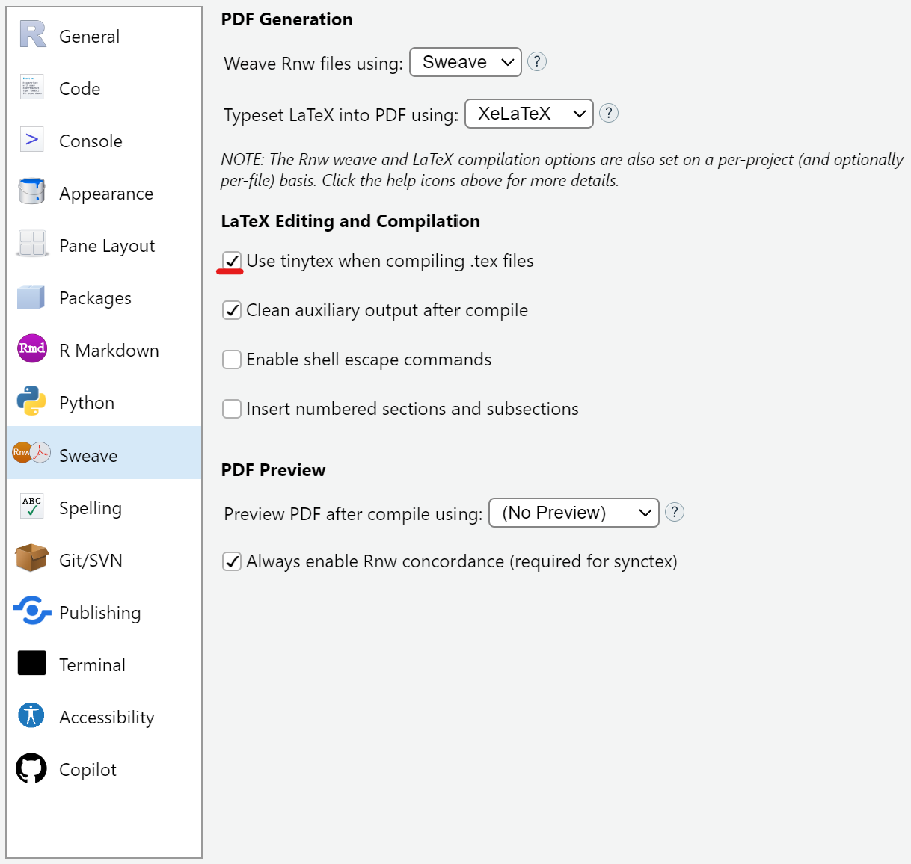

はじめに
ローカルへのRのインストール方法についてまとめます。これまでの記事でご紹介した開発コンテナとは違い、特に事前準備はいりません。
こんなニッチなサイトを見てくれている方には必要ない気もしますが、Stata出身の方々や実証が初めての方々に向けて…
あと、シンプルにリンク探すの面倒ですよね、まとめます。
結論
以下のリンクに書いてあるものがすべてです。
さすがに…
こんなんで説明になるわけがないので、設定なども含めてもう少し説明します。
まず、Rを使うには、「R」と、「RStudio」が必要です1。
Rは調理用具で、RStudioはキッチンだと思ってもらえればよいのではないでしょうか。Rという用具だけでも料理はできるけど、RStudioという環境が整っているほうが料理が効率的にスムーズに行えると思います。
この観点からすれば、RStudioは必ずしも要るわけではないのかもしれませんが、わざわざキッチン以外で料理する人はいませんよね…笑
1. Rをインストール
以下のリンクを開き、自分の環境に合わせて「Download R for…」を選びます。
進んだら、上部に出てくる「base」をクリックして次に行きます。
次に「Download R-4.4.1 for Windows」のように出てくるので、そこをクリックするとインストーラーがダウンロードできます。

ダウンロードできたらそのファイルを開き、インストールを開始します。
- 言語を決めて次へ
- 情報を読んで次へ
- インストール先はデフォルトのまま次へ
- コンポーネントもデフォルトのまま次へ
- 起動時オプションもデフォルトのまま次へ
- スタートメニューフォルダーもデフォルトのまま次へ
- 追加タスクもデフォルトのまま次へ
- 先ほども言った通り作業はRStudioでするので、デスクトップにアイコンを置いたところで使うことはないため、必要なければそのチェックを外してください。
- インストール完了
以上でインストールができました。
2. RStudioのインストール
次にキッチンであるRStudioをインストールします。
以下のリンクの「DOWNLOAD RSTUDIO DESKTOP FOR…」をクリックするとインストーラーをダウンロードできます。
https://posit.co/download/rstudio-desktop/
先ほどと同様ダウンロードできたファイルを開いてインストールを開始します。
Rほどいろいろ考えることはなく、デフォルトのまま進んでインストールすれば完了です。
これでRStudioをインストールできました。開いて作業を進めましょう！
3. RStudioの設定
そのまま作業を始めてもよいのですが、少し設定を覗いてみましょう。
画面上部のToolsからGlobal Options…へ進みます。

いろいろな項目がありますが、ここでは簡潔に関係ありそうなところを説明します。
デフォルトのワーキングディレクトリ
1番上のGeneralの中にDefault working directoryという項目があります。ワーキングディレクトリの説明は長くなるので端折りますが、ここで設定が可能です。
デフォルトでは「~」ですが2、必要に応じて変えてください。

パイプ演算子
もはやRユーザーにはおなじみのパイプ演算子ですが、Tidyverseが提供する%>%と、base Rが提供する|>3の2種類があり、キーボードショートカットでどちらを使うか決められます。デフォルトは%>%です。
正直どちらを使うのかはお好みというか、厳密に違いはあるのですが、普段使っていてどちらかでないと困るようなことには遭遇しませんので、変えても変えなくても問題ありません。
上から2番目のCodeの中にある「Use native pipe operator, |>」にチェックを入れるとショートカットで|>が出るようになります。

ちなみに、ショートカットはCtrl (Macなら⌘) + Shift + Mです。
テーマやフォント
上から4番目のAppearanceではRStudioのテーマやフォントを変更できます。
特にEditor fontとEditor themeが主な変更点になると思います。
いろいろ試してみるとよいと思います。

レイアウトの変更
RStudioのデフォルトでは左上にスクリプト、左下にコンソール、右上に変数等、右下にファイル等が表示されるようになっています。
例えば僕は、スクリプトの表示割合を増やしたく、さらにコンソールも並べて見たいと思っているので、パネルの配置を変更しています。
上から5番目のPane Layoutで変更します。
僕の変更後の配置は次の通りです。

確認時以外は変数は表示しなくてよいので、Sourceパネル右上にある![]() で左半分をスクリプトにしています。
で左半分をスクリプトにしています。
Sweaveの設定
そのうちTinyTeXを使ってRStudio上で文書作成などをすることになることもあるかと思います。そんなときのための設定です。
中央下あたりのSweaveから「Typeset LaTeX into PDF using: 」をXeLaTeXに設定、その下の「Use tinytex when compiling .tex files」にチェックを入れます。
これでいつしかTinyTeXを使う時でも問題なしです。

設定はこんなところではないでしょうか。
1番下のCopilot、これはGitHub Copilotでめんどくさい申請をしてでも使うべきだと思っているのですが、RStudioとは相性最悪なのでおすすめしません。VSCodeのために申請するのはとても良いと思います。
最後に
最近はリモート環境について学んでいたので、記事もそちらに偏りがちだったのですが、些細な業務はやっぱりローカルの方が楽でいいですね。
うまく使い分けていきたいなと思っているところです。
これからRを使っていく方の少しでも役に立てれば幸いです。